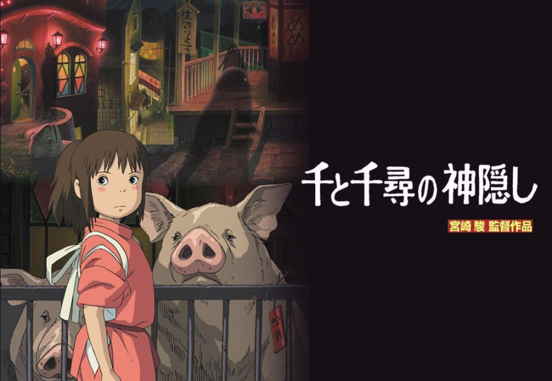
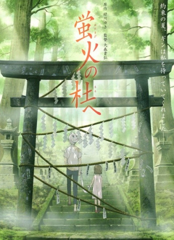
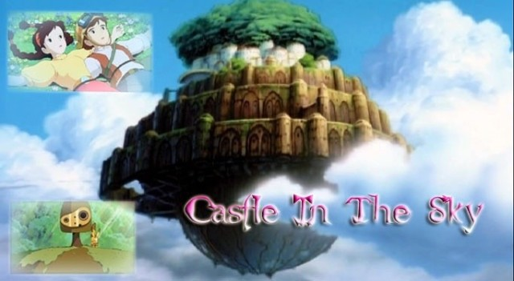
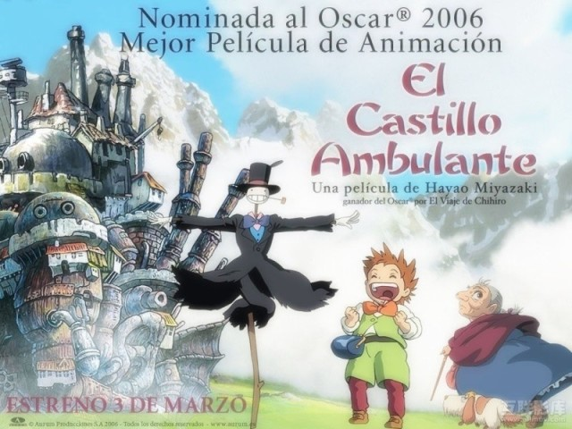
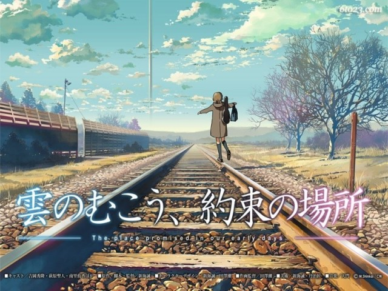
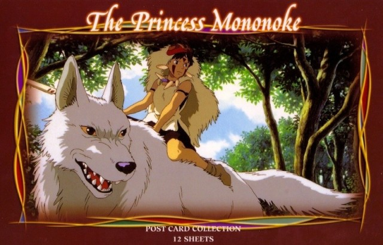
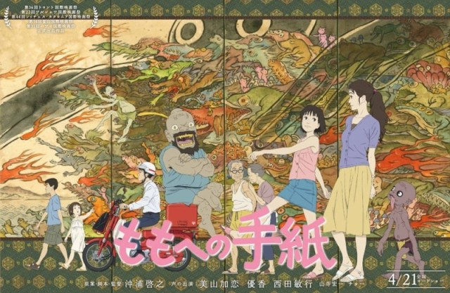
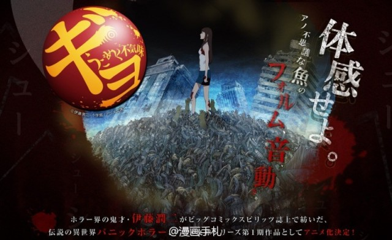
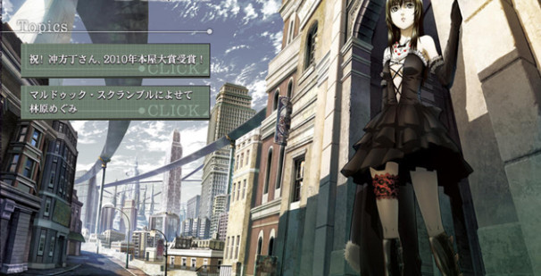
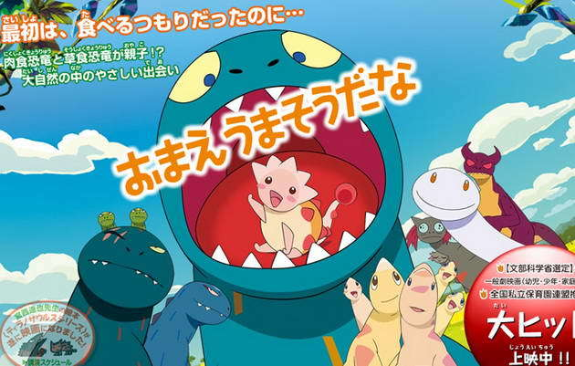

|
推荐几部动漫电影

1.《千与千寻》
宫崎骏大师无法超越的作品，百看不厌！ |
|

2.《萤火之森》
原作绿川幸，唯美，清新，感动你没得说！貌似绿川幸的画风都是这种类型，比如《夏目友人帐》！
|

3.《天空之城》
多少80、90看过这部动漫电影的？！绝对的经典中的经典啊！ |

4.《哈尔的移动城堡》
宫崎骏的经典作，表示第一次看的时候被哈尔惊艳了！画风简单大方，爱死哈尔这个万人迷了。 |

5.《云之彼端约定的地方》
新海诚出品，不废话了，看了就知道。
|

6.《幽灵公主》
宫崎骏大师出品，画风偏黑暗系吧！那啥看着有点重口。。。人与自然啊！
|

7.《写给桃子的信》
就是这样一部作品，质朴的手绘风格搭配风温馨味，洋溢着日系动画的独特魅力。
|

8.《鱼 OVA》
伊藤润二经典恐怖漫画改编 。。。重口味，不推荐口味轻的童鞋观看。。。这绝对不止是一部重口味动漫电影而已。。。
|

9.《壳中少女》
根据冲方丁老师的同名小说三部曲《压缩》、《燃烧》、《排气》改编。这部剧场版动画电影，制作水准相当不错。
|

10.《你看起来好像很好吃》这部动漫电影超级感人啊，赚泪不解释。 |